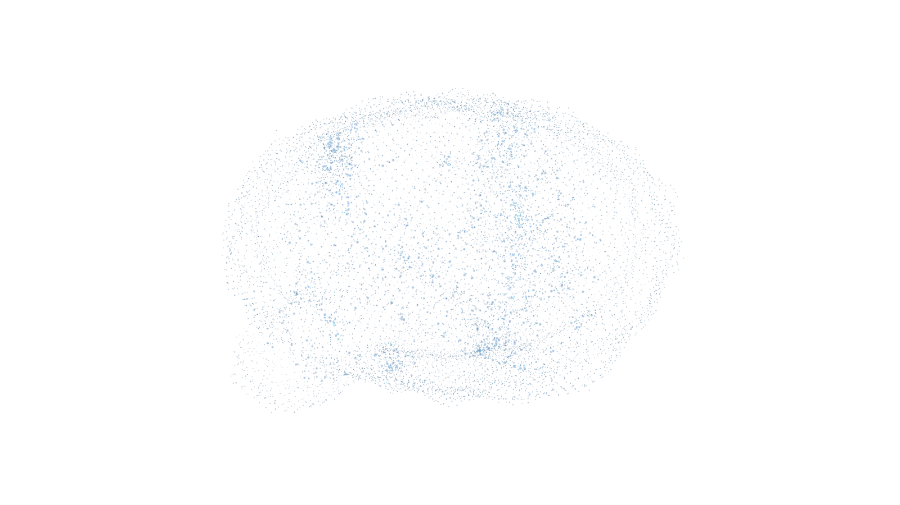
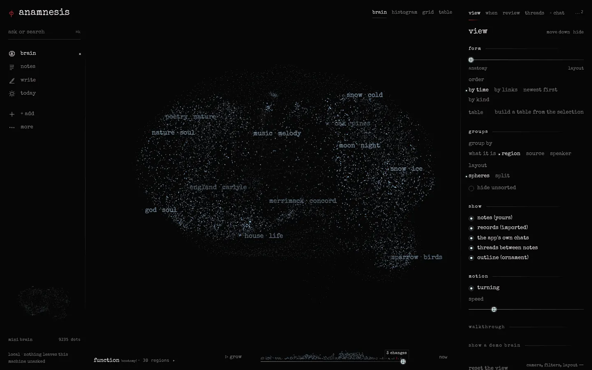
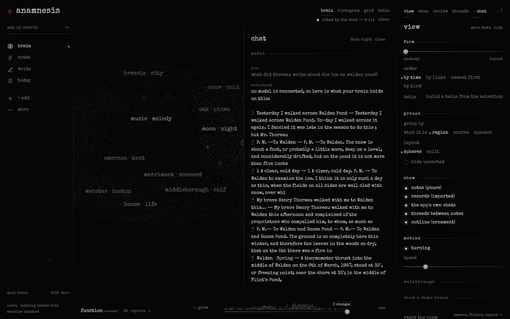
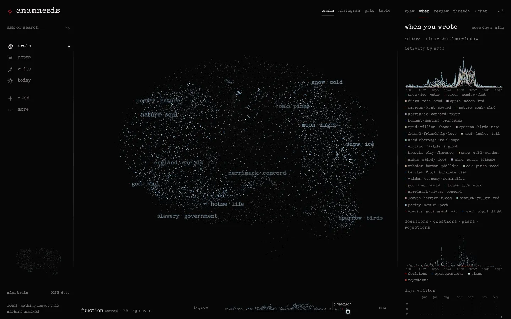
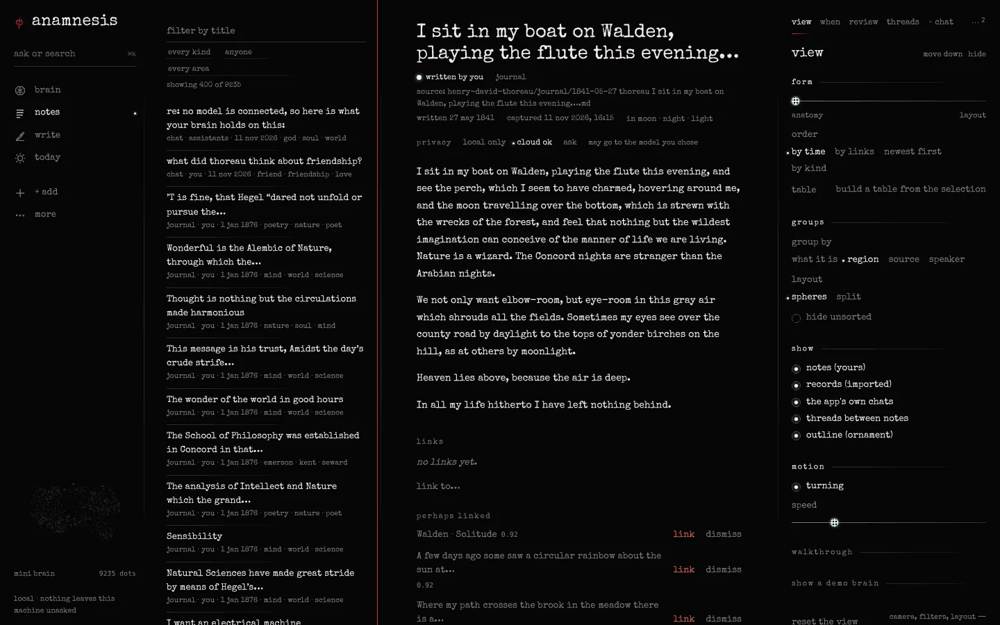
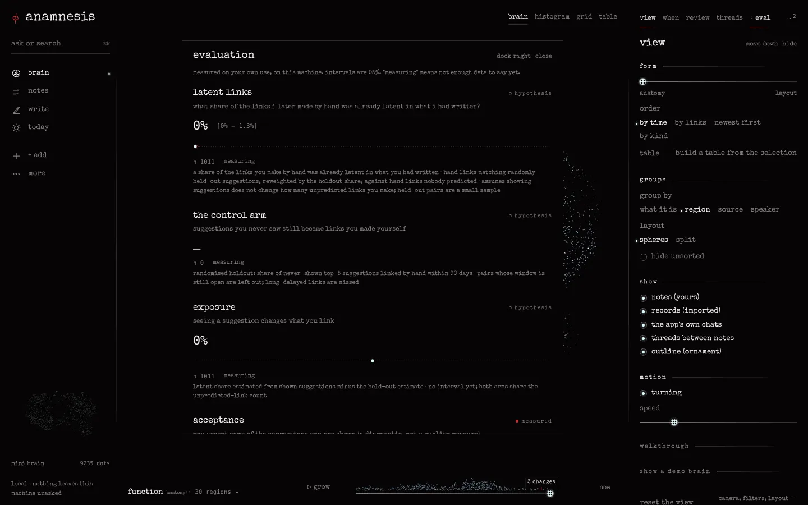

anamnesis
ἀνάμνησις
a local-first second brain that measures itself. it gathers what you write and read into one brain on your own machine, and asks how much of your thinking was already there.
what share of the links i later make by hand was already latent in what i had written?
opus
what it does
-
capture from anywhere
folders, obsidian vaults, pdfs, feeds, web clips, an editor, chat, mcp. every item becomes a dot in the brain.
-
the growing brain
regions that keep their identity, with lineage you can replay. a stable 3d layout that does not reshuffle as it grows. provenance on everything: who wrote it, where from, when.
-
measured, not assumed
held-out link suggestions, retrieval and resurfacing metrics with intervals, and an honesty table that says what is measured and what is only a hypothesis.
-
bring your own model
local models, api keys, continue with chatgpt, your installed claude cli (marked grey), or none at all. the brain is also an mcp server, so claude code, codex and gemini cli can read and write it.
imagines
the app
screenshots of the real app on its demo brain, built from thoreau's and emerson's public-domain journals. open one for the full size.










the evaluation reads "measuring" because nobody has used the demo brain yet: those numbers only exist once a person does.
limen
install
-
windows 10 / 11
setup.exe (for you only, no admin) or .msi. unsigned for now: if smartscreen says "windows protected your pc", choose more info → run anyway.
-
macos
.dmg. unsigned for now: the first time, macos refuses to open it; go to system settings → privacy & security and click open anyway.
-
linux
.deb or .AppImage. needs webkitgtk 4.1, present on current gnome and kde desktops.
the first launch opens on a demo brain, already built. the local embedding model (~465 mb) downloads once in the background; until it is ready, search matches words only. details per os: install.
or build from source
needs rust 1.90 or newer and a c compiler. on linux, also libwebkit2gtk-4.1-dev.
git clone https://github.com/aphesist/anamnesis
cd anamnesis
cargo run --release -p anamnesis-desktopsecretum
yours, on your machine
- it runs on your machine. one sqlite file in your data directory.
- nothing leaves unless you connect a model and ask it something.
- every remote call is logged as an egress event: which provider, which model, what for, how many characters. counts, never text.
- no account, no telemetry.
privacy says exactly what is and is not covered.
νῦν
in progress · v0.1.0 pre-release
this is the first public build. the installers are unsigned, so windows and macos will warn you (see above). things will be rough. if something breaks, report an issue.